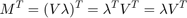
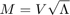

Contents
clear; close all; clc;
a)
Samples from a N-dimensional normal distribution can be obtained by calling the function nrandn. This produces samples from a normal distribution with mean 0 and identity matrix as its covariance matrix. Let this matrix be Cx. We have to transform this sample using the matrix M to produce sample that has a covariance Cy. Let the samples drawn initially be X, hence we are interested in producing the samples Y as:
The covariance Cy of the new samples is related to the old covariance Cx by:
Since Cx is an identity matrix, we get:
Now performing eigen-value decomposition of Cy, we can write Cy as:

The eigen values are stored in matrix which is a square-matrix with non-zero positive diagonal elements and 0 off-diaognal elements. The non-zero positive diagonal elements is guaranteed because covariance matrices are symmetric and positive-definite. Therefore, we can define a matrix as:
where stores the square-root of each eigen-value.
Thus, we can write Cy as:
Notice that since is symmetric,
Let
Hence we have: 
This matches the equation for Cy above. Therefore, in order to convert samples to have covariance Cy, we multiply samples by M given by the equation:

The mean of Y that is produced is still 0 and hence it needs to be translated by adding the desired mean to each vector in Y. This can be done using repmat function.
The overall process is captured in the nRandn function defined at the end of this document.
mu = [4, 5]; % Mean of 2-D Gaussian cy = [8, -5; -5, 4]; % Covariance of 2-D Guassian num = 1000; % Sample size desired samples = nRandn(mu, cy, num); % Draw samples from 2-D Gaussian with specified mean, covariance and sample size figure(); scatter(samples(:, 1), samples(:, 2)) title('Scatter plot of samples drawn')
The scatter plot is elliptical confirming that it confirms from a 2-D Gaussian. We can see that the distribution is centered at (4, 5). We can also see that the variance is high along x as opposed to y as is expected since 8 > 4. We also see that x and y are negatively correlated captured by negative covariance of x and y in cy.
b)
We started with a 2-D Gaussian with identity covariance matrix and 0 mean. This was
We then transformed this to have a covariance and mean by transforming it with the matrix M. Let this new distribution be X. Hence we have:
where,
The marginalized distribution is then computed by projecting X onto a unit vector
Let this projection be Y. Hence we have:
Therefore, we have:
Therefore,
Hence the mean of the projection is:
And the transformation matrix now is:
Thus, the variance for Y becomes:
First, we defined 48 evenly spaced unit vectors along a unit circle as [cos(theta), sin(theta)] where theta varies uniformly from 0 to 2*pi. For each of these unit vectors, we then project the samples onto them to compute the marginal distribution. The actual mean and variance can be computed using mean() and var() functions of matlab. Additionally, the predicted mean and variance is computed using the formulae just derived.
centered_samp = samples - repmat(mu, num, 1); % centering the samples using the mean cov_samples = (1/num) * (centered_samp' * centered_samp); % covariance matrix of centered_samples angs = linspace(0, 2*pi, 48); % 48 evenly spaced angles between 0 and 2*pi mu_proj_pred = zeros(length(angs), 1); var_proj_pred = zeros(length(angs), 1); mu_proj_act = zeros(length(angs), 1); var_proj_act = zeros(length(angs), 1); for i = 1:length(angs) u_vec = [cos(angs(i)), sin(angs(i))]; % Computing unit vectors samp_proj = samples * u_vec'; % Marginal distribution mu_proj_pred(i) = mu * u_vec'; % Predicted mean var_proj_pred(i) = u_vec * cov_samples * u_vec'; % Predicted variance mu_proj_act(i) = mean(samp_proj); % Actual mean of the projection var_proj_act(i) = var(samp_proj); % Actual variance of the projection end figure(); stem(angs, mu_proj_pred, 'r', 'DisplayName', 'Mean predicted'); hold on; stem(angs, mu_proj_act, 'k', 'DisplayName', 'Mean actual'); xlabel('Angle (radians)') ylabel('Mean') title('Mean projection and actual') legend(); figure(); stem(angs, var_proj_pred, 'r', 'DisplayName', 'Mean predicted'); hold on; stem(angs, var_proj_act, 'k', 'DisplayName', 'Mean actual'); xlabel('Angle (radians)') ylabel('Variance') title('Variance projection and actual') legend();
From the stem plots, we can see that the actual mean and the predicted mean of all the marginal distributions match. We can also see that the actual variance and the predicted variance of the marginal distributions match.
c)
samples_new = nRandn(mu, cy, 1000); % New sample centered_samples_new = samples_new - repmat(mu, 1000, 1); mu % Actual mean new_mu_pred = mean(samples_new, 1) % Mean of the new sample cy % Actual variance new_cov_pred = (1/1000) * (centered_samples_new' * centered_samples_new) % Covariance of the new sample
mu =
4 5
new_mu_pred =
3.9929 5.0153
cy =
8 -5
-5 4
new_cov_pred =
7.7379 -4.8707
-4.8707 3.9140
We can see that the mean of the sample drawn is similar to the actual mean passed to draw the sample. Similarly, the variance of the sample drawn is similar to the actual variance passed to draw the sample.
In order to draw the ellipse on the transformed data, we can first create a unit circle. This circle has same variance along x and y and hence has an identity covariance matrix. We can then transform the circle in the same way the data has been transformed: first my multiplying the circle with M to have the covariance Cy and then my translating with mean to have the same mean as the sample.
[V, D] = eig(cy); % eigven value decomposition of the covariance matrix M = V * sqrt(D); % Transformation matrix M computed as described in (a) circ_vects = [cos(angs); sin(angs)]; % creating a circle of vectors ellip_vects = repmat(mu', 1, length(angs)) + M * circ_vects; % Performing same transformation as data figure(); scatter(samples_new(:, 1), samples_new(:, 2)) hold on; plot(ellip_vects(1, :), ellip_vects(2, :), 'r', 'LineWidth', 2) title('Plotting a transformed ellipse on the sample')
Repeating this for 3 additional data sets. The covariance matrix can be generate randomly. However, covariance matrix is supposed to be symmetric and positive-definite and hence has a restriction on the set of values it can assume. It can be generate easily by taking a random 2*2 matrix and then multiplying this matrix by its transpose.
for k = 1:3 % Generating a random covariance matrix cov_generator = rand(2); cov_k = cov_generator * cov_generator.'; % Generating a random mean with values upto 10 mu_k = randi(10, 1, 2); % Drawing random samples samples_k = nRandn(mu_k, cov_k, num); % Eigen value decomposition of covariance matrix [V, D] = eig(cov_k); % Transformation matrix M = V * sqrt(D); % Computing the new ellipse ellip_vects = repmat(mu_k', 1, length(angs)) + M * circ_vects; figure(); scatter(samples_k(:, 1), samples_k(:, 2)) hold on; plot(ellip_vects(1, :), ellip_vects(2, :), 'r', 'LineWidth', 2) title('Plotting a transformed ellipse on the sample') end
d)
The marginal distribution will have the maximum variance when the unit vector along which the data is projected lies parallel to the spread of the data. The spread of the data can be captured using Principal Component Analysis (PCA) or eigenvalue decomposition. For this, first the data (D) is centered using its mean. And a covariance matrix is computed from the data as:
The eigenvalue decomposition of the covariance matrix can then be performed as:
The largest variance of the data is captured by the vector that has the largest eigenvalue. The eigenvalues are present along the diagonal of the matrix . The eigenvectors are stored as the columns of the matrix V. Hence the desired unit vector is the column of the matrix V that has the largest eigenvalue.
samps = nRandn(mu, cy, 1000); % New sample D = samps - repmat(mu, 1000, 1); % Centering the data C = (1/1000) * (D' * D); % Covariance matrix [V, l] = eig(C); % The maximum eigenvalue is the second one hence the corresponding unit % vector is the second column of V max_var_u = V(:, 2); max_var_u = max_var_u/sqrt(sum(max_var_u.^2)); % Normalizing to make a unit vector figure(); scatter(samps(:, 1), samps(:, 2)) hold on; plot([mu(1), mu(1) + max_var_u(1)], [mu(2), mu(2) + max_var_u(2)], 'LineWidth', 2)
From the plot, we can see that this vector indeed lies along the direction that will capture the maximum variance of the data in the samples drawn.
function samples = nRandn(mean, cov, num) % The function draws samples from an N-dimensional normal distribution. % It does so my first drawing samples from an N-dimensional normal % distribution of 0 mean and identity covariance matrix. It then % transforms the data using a matrix M to have the covariance "cov". % Lastly, it translates the data to have the mean "mean". N = length(mean); [V, D] = eig(cov); % Eigen value decomposition of covariance matrix M = V * sqrt(D); % Transformation matrix is given as product of V and square-root of eigenvalues samp = randn(num, N); % Drawing samples from N-dimensional normal distribution with mean 0 and identity covariance matrix samples = repmat(mean, num , 1) + samp * M'; end